Eeveelution Campfire
Eeveelutions
Eevee
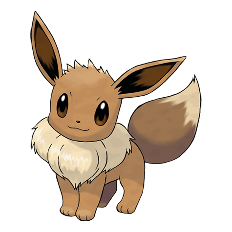

Eevee is the base of the eeveelutions, being able to evolve into any of the 17. It can be evolved with a stone or by meeting conditions.
Eevee is a fox-like creature with thick, soft, white fur around its neck and the end of its tail. Compared to the others, it's the smallest at an average height of 0.3m (1'00") and an average weight of 6.5kg (14.3 lbs).
Eevee's the most common of the eeveelutions, most commonly found in large plains or light forests, living among the roots of trees in dens.
Strike Eevee

A special form of Eevee. Rarely found in storms or the highest mountains, this black-furred variant has a very high price on the market.
Its most notable features are its light blue eyes and the light blue markings on its body.
Spirit Eevee

A special form of Eevee. Found amongst the graves and tombstones of graveyards, It's nearly always suspected to be the lingering spirit of a dead pokemon.
This form's recognizable due to its fur and fluff being the same color.
Vaporeon

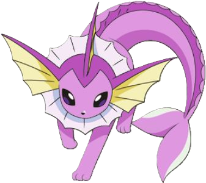
Vaporeon is the water type evolution. This evolution is guaranteed upon an Eevee coming in contact with a Water Stone
Instead of fur, most Vaporeons have hard scales covering their body. Its most recognizable features are its long mermaid-like tail, white neck ruff and three fin-like ears. It has an average height of 1m (3'03") and an average weight of 29kg (63.9 lbs).
Vaporeon's found around wet areas. It's most commonly seen around rivers, ponds, lakes and oceans, but some reports claim rare sightings in swamps.
Strike Vaporeon

A special form of Vaporeon. Rarely found in storms and high mountains around large bodies of water, this black-scaled variant has a very high price on the market.
It's most notable features are its light blue eyes and the light blue markings on its body.
Spirit Vaporeon

A special form of Vaporeon. Found rarely amongst the graves and tombstones of graveyards, It's nearly always suspected to be the lingering spirit of a dead pokemon.
This form's recognizable due to it'S scales and fins being the same color.
Flareon

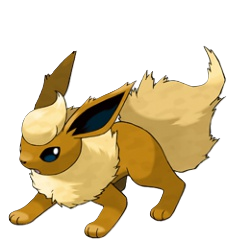
Flareon is the fire type evolution. This evolution is guaranteed upon an Eevee coming in contact with a Fire Stone
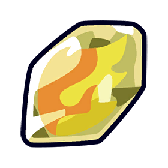
Flareon has the most fluff out of all the eeveelutions. These fluffs are it's most recognizable features as well, having the biggest tail and neck fluff of all the eeveelutions. It has an average height of 0.9 m (2'11") and an average weight of 25 kg (55.1 lbs)
Flareon's found around the hottest environments. Most common sightings include deserts and bases of volcanoes, but witnesses have also claimed to rarely see it in Savannas and around natural hot springs.
Blue Moon Flareon

A special form of Flareon. Possibly one of the rarest special forms because it's only found during a celestial event called a blue moon.
Blue Moon Flareon has a unique evolution condition: An Eevee must come in contact with a Fire Stone and must be exposed to the reflected deep blue light of a Blue Moon.
Blue Moon Flareon is identical to a regular Flareon, except it has black fur and dark blue fluff. This blue fluff, suspected to be made of a special material, Blue Moon Flareon is amongst the most valued pokemon on the market.
Spirit Flareon

A special form of Flareon. Found rarely amongst the graves and tombstones of graveyards, It's nearly always suspected to be the lingering spirit of a dead pokemon.
// APPEARANCE DESCRIPTION MISSING //
Jolteon

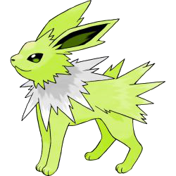
Jolteon is the electric type evolution. This evolutions is guaranteed upon an Eevee coming in contact with a Thunder Stone
Jolteon's the fastest eeveelution, reaching speeds of over 418 km/h (260mph). It's most recognizable due to its spiky fur and lack of a tail. It has an average height of 0.8 m (2'07") and an average weight of 24.5 kg (54 lbs)
Jolteon is mostly found mostly in mountains, but it's also known to wander around during storms.
Strike Jolteon

A special form of Jolteon. Rarely found in mountains and savannas during heavy storms, it's the rarest strike form out of all. Due to its higher speed, it has quite the value on the market.
Strike Jolteon is identical to a regular Jolteon, except it has a black fur and light blue markings.
Tailed Jolteon

A special form of Jolteon. It's extremely rare, but a weird evolution can cause Jolteons to have a very spiky tail.
Spirit Jolteon

A special form of Jolteon. Found rarely amongst the graves and tombstones of graveyards, It's nearly always suspected to be the lingering spirit of a dead pokemon.
// APPEARANCE DESCRIPTION MISSING //
Umbreon


Umbreon is the dark type evolution. This evolution is guaranteed upon an Eevee coming in contact with a Dusk Stone
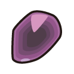
or having an Eevee exposed to moonlight with high friendship.Umbreon's most recognizable features are its glowing rings on its legs, forehead, ears and tail. It's the best eeveelution at hiding in dark places due to it's dark fur. It has an average height of 1 m (3'03") and an average weight of 27 kg (59.5 lbs)
Umbreon is mostly found in dark forests and caves, but it's also known to roam around during the night.
Strike Umbreon

A special form of Umbreon. Rarely found at night during storms.
// APPEARANCE DESCRIPTION MISSING //
Ashen Umbreon

A special form of Umbreon. Ashen Umbreon is found in deep and irregularly dusty caves.
Ashen Umbreon's fur has a pattern similar to Ash spread on a smooth surface, while its eyes and rings are a reddish-magenta. Unlike other Umbreons, its eyes are structured differently.
Hunters are the least likely to go after Ashen Umbreons because of their habitats, making hunting extremely annoying.
Blood Moon Umbreon

A special form of Umbreon. Possibly one of the rarest special forms because it's only found during a celestial event called a blood moon.
Blood Moon Umbreon has a unique evolution condition: An Eevee must come in contact with a Dusk Stone or have high friendship and must be exposed to the reflected red light of a Blood Moon.
Blood Moon Umbreon is identical to a regular Flareon, except it has red rings and light blue eyes. Due to its rarity, Blood Moon Umbreon has a very high price on the market.
Spirit Umbreon

A special form of Umbreon. Found rarely amongst the graves and tombstones of graveyards, It's nearly always suspected to be the lingering spirit of a dead pokemon.
// APPEARANCE DESCRIPTION MISSING //
Espeon
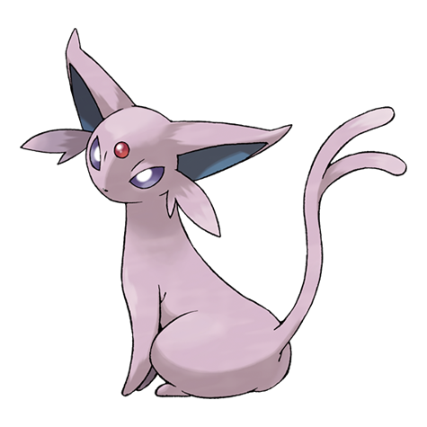
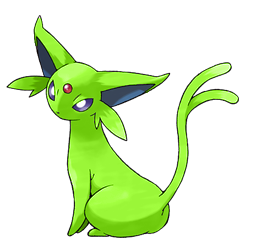
Espeon is the psychic type evolution. This evolution is guaranteed upon an Eevee coming in contact with a Dawn Stone or having an Eevee exposed to sunlight with high friendship.
Espeon's most recognizable features are its twin-tail and its forehead gem. It has very smooth pink fur. It has an average height of 0.9 m (2'11") and an average weight of 26.5 kg (58.4 lbs)
Espeon is mostly found in clear, plain patches of grass during daytime, and is known to retreat into shelters during the night.
Strike Espeon

A special form of Espeon. Rarely found in grasslands during daytime.
// APPEARANCE DESCRIPTION MISSING //
Spirit Espeon

A special form of Espeon. Found rarely amongst the graves and tombstones of graveyards, It's nearly always suspected to be the lingering spirit of a dead pokemon.
// APPEARANCE DESCRIPTION MISSING //
Leafeon
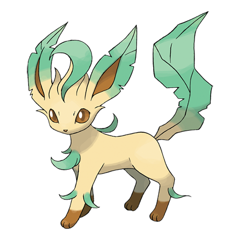

Leafeon is the grass type evolution. This evolution is guaranteed upon an Eevee coming in contact with a Leaf Stone
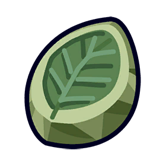
or having Eevee level up near a giant moss stone.Leafeon's most recognizable features are its forehead leaf and its leaf-like ears and tail. It also has several smaller leaf-like structures attached to its body. It has an average height of 1 m (3'03") and an average weight of 25.5 kg (56.2 lbs)
Leafeon is mostly found in dense forests and overgrown caves, but it's rarely been spotted wandering in swamps or flower fields.
Seasonal Leafeons


Special forms of Leafeon. Seasonal Leafeons are extremely rare. They're Leafeons who have adapted to the harsh conditions of different environments.
Spring Leafeon has slightly brighter fur and pink leaves, Summer Leafeon has darker fur and brighter leaves, Autumn Leafeon has slightly darker fur and orange leaves, and Winter Leafeon has near-white fur and pine green leaves.
Believed to be protectors of the seasons, hunters are skeptical in hunting them.
Strike Leafeon

A special form of Leafeon. Rarely found in dense forests during storms.
// APPEARANCE DESCRIPTION MISSING //
Spirit Leafeon

A special form of Leafeon. Found rarely amongst the graves and tombstones of graveyards, It's nearly always suspected to be the lingering spirit of a dead pokemon.
// APPEARANCE DESCRIPTION MISSING //
Glaceon

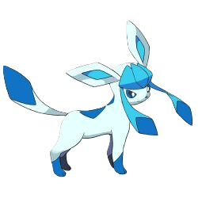
Glaceon is the ice type evolution. This evolution is guaranteed upon an Eevee coming in contact with an Ice Stone
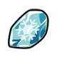
or having an Eevee level up near a giant frozen stone.Glaceon's most recognizable features are its ice shard crown and flat tail. It has 2 long, flat ribbon-like structures hanging from its crown. It has an average height of 0.8 m (2'07") and an average weight of 25.9 kg (57.1 lbs).
Glaceon is mostly found in snowy or frozen environments like tundras, glaciers and arctic regions like frozen oceans.
Spirit Glaceon

A special form of Glaceon. Found rarely amongst the graves and tombstones of graveyards, It's nearly always suspected to be the lingering spirit of a dead pokemon.
// APPEARANCE DESCRIPTION MISSING //
Sylveon
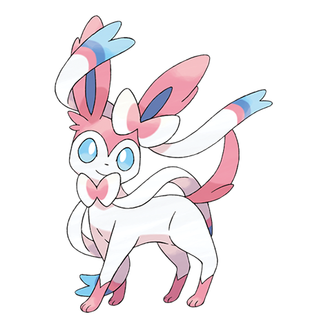
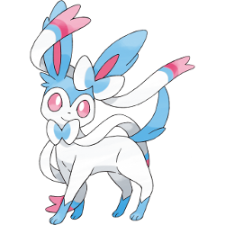
Sylveon is the fairy type evolution. This evolution is guaranteed upon maxing out an Eevee's friendship.
Sylveon's most recognizable features are its 4 ribbons attached to bowties in pairs. It has an average height of 1 m (3'03") and an average weight of 23.5 kg (51.8 lbs).
Sylveon is mostly found in blooming areas like flower fields and flower forests.
Spirit Sylveon

A special form of Sylveon. Found rarely amongst the graves and tombstones of graveyards, It's nearly always suspected to be the lingering spirit of a dead pokemon.
// APPEARANCE DESCRIPTION MISSING //
Insecteon
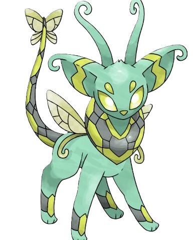
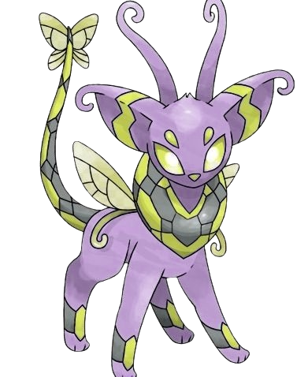
Insecteon is the bug type evolution. This evolution is guaranteed upon leveling an Eevee up near cattails in a swamp. Planting cattails yourself do count as long as they're in a swamp.
Insecteon's most recognizable features are its antennae, small insect-like wings and its butterfly-shaped tail. It has an average height of 0.9 m (2'11") and an average weight of 19 kg (41.9 lbs).
Insecteon lives around areas with lots of pollen and nectar while occasionally appearing around swamps.
Brawleon
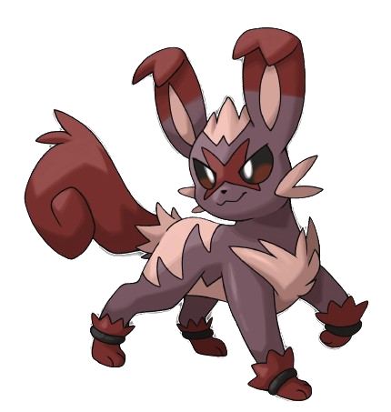
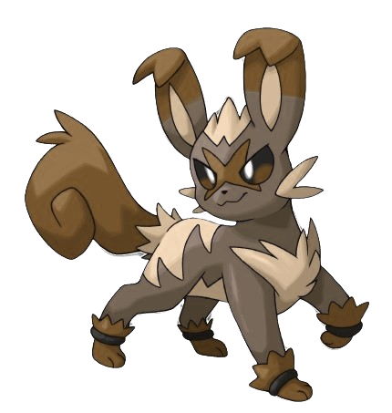
Brawleon is the fighting type evolution. This evolution is guaranteed upon leveling an Eevee that knows a fighting type move up. Due to Eevee being able to learn Double Kick, this is one of the most common eeveelutions.
Brawleon's most recognizable features are its curly, squirrel-like tail and the cross on its face. It has an average height of 1.1 m (3'07") and an average weight of 34 kg (74.9 lbs).
Brawleon is most common as a captured pokemon, but it can rarely be found anywhere that's not a freezing or scorching environment.
Veneon
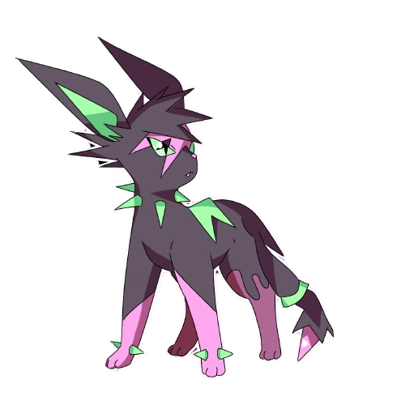
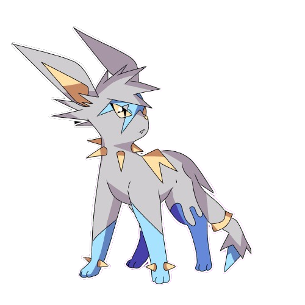
Veneon is the poison type evolution. This evolution is guaranteed upon leveling an Eevee with high friendship up in a swamp.
Veneon's most recognizable features are its spikes around its neck and the spiky markings on its face and back. It has an average height of 0.8 m (2'07") and an average weight of 25.8 kg (56.9 lbs).
Veneon is most common in muddier areas of swamps, but it's also known to roam around edges of shallow bodies of water.
Dusteon
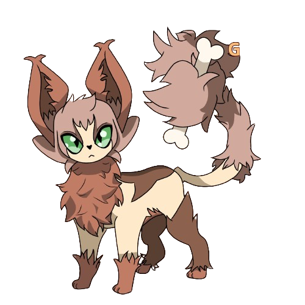
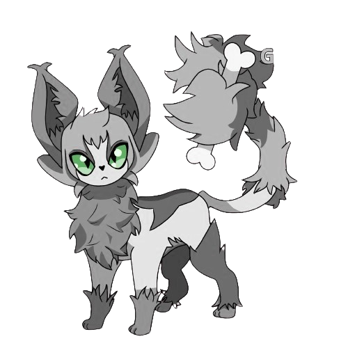
Dusteon is the ground type evolution. This evolution is guaranteed upon Eevee reaching high friendship while knowing a ground type move. Since Eevee can learn Sand Attack at quite a young age, this is one of the most common eeveelutions.
Dusteon's most recognizable features is its fluffy tail which is holding a bone. It has an average height of 1 m (3'03") and an average weight of 32.8 kg (72.3 lbs) mostly because of its bone.
Dusteon is mostly found underground close to the surface, but disappears for winter.
Breezeon
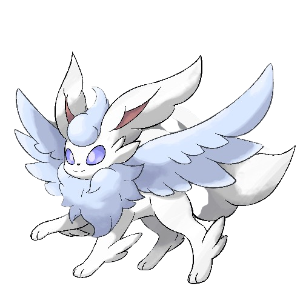
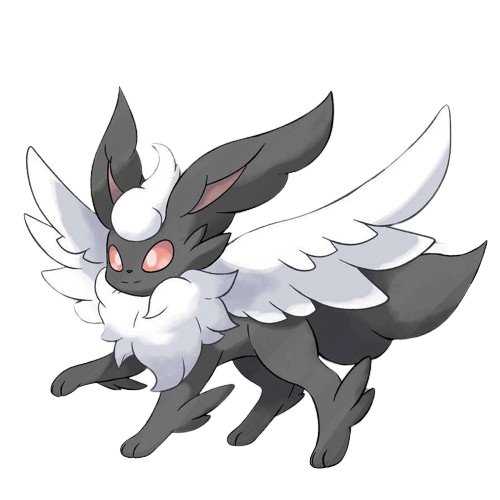
Breezeon is the flying type evolution. Guaranteeing the evolution of an Eevee into a Breezeon is the most risky. This evolution is guaranteed by making an Eevee fall for an extended period of time during heavy winds on mountains.
Breezeon's most recognizable features are its wings, fluffy tail and flareon-like fluff around its neck. It has an average height of 1 m (3'03") and an average weight of 16.5 kg (36.4 lbs).
Breezeon is mostly found flying through the air or rarely on the ground on high mountains.
Alolan Breezeon

A special form of Breezeon. Found around the Alola region, it uses its ears as wings.
Alolan Breezeon is much less fluffy than a normal breezeon, giving it an easier time soaring through the skies.
Obsideon
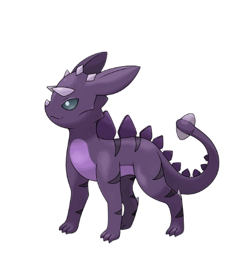
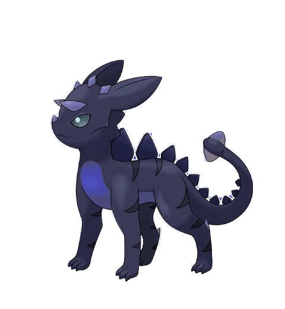
Obsideon is the rock type evolution. This evolution is guaranteed upon an Eevee being exposed to the environment of a deep cave with high friendship.
Obsideon's most recognizable due to its dinosaur-like appearance. It has an average height of 0.8 m (2'07") and an average weight of 42 kg (92.6 lbs).
Obsideon is mostly found in deep caves, most commonly around underwater lakes. Some witnesses claim to have seen obsideons swimming in lava as well.
Alolan Obsideon

A special form of Obsideon. Found around the Alola region, it has a much more rocky exterior.
Alolan Obsideon has a much longer rocky tail and a coat of rocks, giving it much higher defense than the normal one.
Skulleon
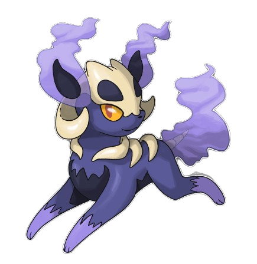
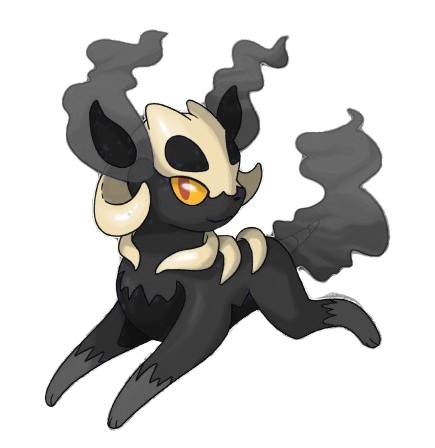
Skulleon is the ghost type evolution. This evolution is guaranteed upon using TM30 Shadow Ball on an Eevee.
Skulleon's most recognizable features are its bone structures around its body and neck and the skull on its head. It has an average height of 0.9 m (2'11") and it's near-weightless with an average weight of 3 kg (6.6 lbs).
Skulleon is mostly found in deep caves with very little to no light. As much as it hates the light, it can rarely be seen getting along with obsideons near or in lava lakes.
Eterneon
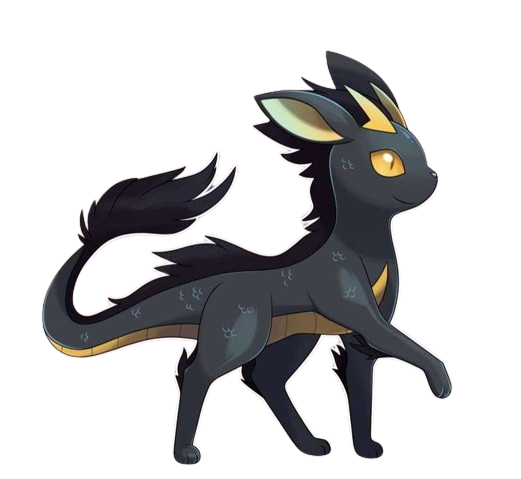
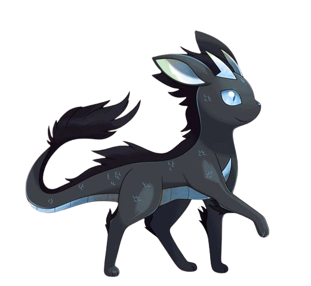
Eterneon is the dragon type evolution. This evolution is guaranteed upon leveling an Eevee holding a Dragon Gem up in the mountains.
Eterneon's most recognizable for its scales, long tail and maine. It has an average height of 1.1 m (3'07") and an average weight of 38 kg (83.8 lbs).
Eterneon is mostly found around mountains at night, but miners claim to have seen them around large underwater lakes as well.
Glaiveon
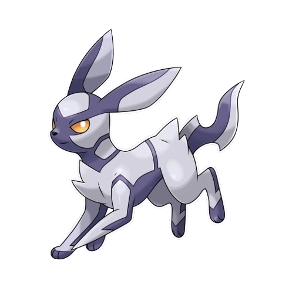
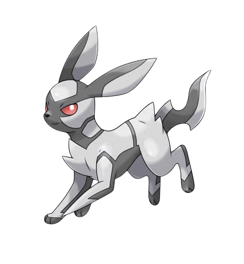
Glaiveon is the steel type evolution. This evolution is the rarest to happen, occuring rarely when an Eevee gets hit with a steel-type move. The move that has the highest chance to evolve it is Iron Tail.
Glaiveon's most recognizable features are its unique markings on its body and its sharp, blade-like tail. It has an average height of 0.9 m (2'11") and an average weight of 48.5 kg (106.9 lbs).
Glaiveon is mostly found captured in factories, but there have been a few times explorers saw wild Glaiveons in abandoned ones.
Galacteon
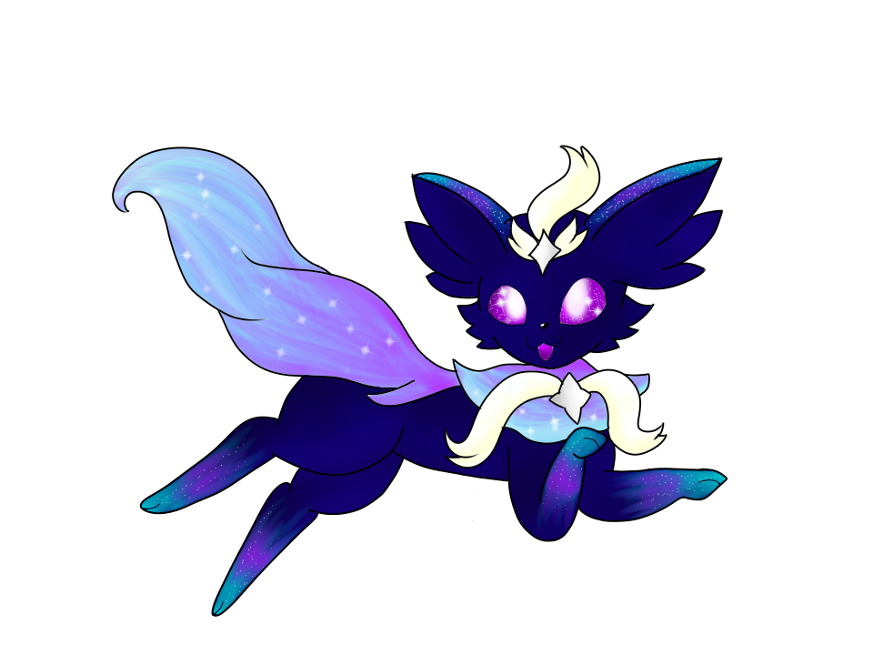
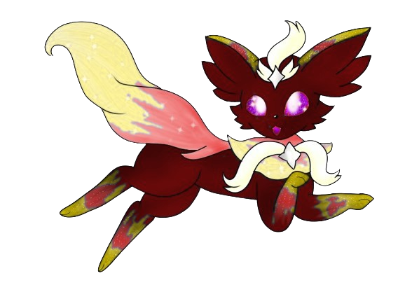
Galacteon is a cosmic type pokemon. Not much is known about them. There have only been 3 real encounters recorded. Attempts to capture and study them have been heavily unsuccessful.
It's highly theorized that Galacteons are protectors of space. While their evolution line is unknown, their Eevee like appearance suggests they could be an eeveelution, though it's not confirmed.
Galacteons are extremely rarely found roaming around anywhere on the planet. A few space missions revealed that there's more of them out there, as there have been a total of 7 sightings of Galacteons floating through space.
Come Join Us!
If we caught your attention, make sure to join our server.